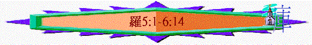

|
超卓的救恩 |
|||||||
|
引言 |
範圍 |
途徑 |
果效 |
盼望 |
讚嘆 |
生活 |
結語 |
|
1:1-17 |
1:18-3:20 |
3:21-4:25 |
5:1-8:17 |
8:18-11:32 |
11:33-36 |
12:1-15:13 |
15:14-16:27 |
∼5:1提我們既因信稱義，就藉……之後表達因信稱義的救恩帶來之超卓果效
1.歡歡喜喜的人生(5:1-11)
∼5:2-3及5:11提到喜樂字眼，整段重點是救恩帶來我們有超越環境而有的喜樂，我們可以喜樂的原因有以下
A.信主後－－得與神相和(v.1)
5:1 我們既因信稱義，就藉著我們的主耶穌基督得與 神相和。
∼相和有和平及和諧意思，我們原本是與神為敵，惹神發怒，但藉主可以與神有和諧，不再為仇敵
B.現今中－－站在恩典中(v.2a)
5:2 我們又藉著他，因信得進入現在所站的這恩典中（下文會更詳細談論信主後有什麼恩典），並且歡歡喜喜盼望 神的榮耀。
∼我們因信也被引入在恩典領域中，這恩典是現在也擁有的
C.將來中－－盼望神榮耀(v.2b)
∼盼望是有期待及相信會實現的意思，
∼將來我們是會看見神的榮耀（神的再來及在天家中的榮耀），所以現在是歡歡喜喜期待及相信會實現的
D.患難中－－生命可成長(v.3-4)
5:3 不但如此，就是在患難中也是歡歡喜喜的；因為知道患難生忍耐，
5:4 忍耐生老練，老練生盼望；
∼患難：有受壓制、受苦、迫害、磨難或內心的愁煩
∼忍耐：堅定、持久、耐心、毅力
∼老練：通過試驗或經過磨練的人格
∼原來救恩給我們一種在患難及受苦中可成長的生命，使我們生出忍耐及能經過磨練及有盼望的生命的
E.在過去－－神超越的愛(v.5-10)
a.過去的回想(v.5-8)
5:5 盼望不至於羞恥，因為所賜給我們的聖靈將 神的愛澆灌在我們心�堙C
5:6 因我們還軟弱的時候，基督就按所定的日期為罪人死。
5:7 為義人死，是少有的；為仁人死，或者有敢做的。
5:8 惟有基督在我們還作罪人的時候為我們死， 神的愛就在此向我們顯明了。
∼羞恥：恥辱、使蒙羞、失望
∼我們信徒可以歡歡喜喜盼望神的榮耀，這份盼望至終不會失望及蒙羞的原因是我們因回想神過往在我們軟弱時怎樣愛我們，而推動我們產生信念，會覺盼望至終會實現的信念
(1)愛的醒覺
∼澆灌有大量流出意思，從前我們不知道神怎樣愛我們，但我們信主後，神將聖靈賜給我們，聖靈將神的愛大量傾流在我們心�堙A使我們知神怎樣愛我們
(2)愛的時間
∼軟弱指在信仰與德性上軟弱無助，我們在犯罪及軟弱的時候，神已愛我們了
(3)愛的對象
∼是罪人
(4)愛的行動
∼基督在我們還作罪人的時候為我們釘死在十架上
(5)愛的超越
∼義人：a righteous man, 正直的公義的；
∼仁人：a good man,有好行為及有用的人
∼在世上為義人及好人死是有的，但很少數目的，但為罪人死更是沒可能的事，但神的愛超越的地方是當我們仍在罪中時，主己為我們死，神的愛就在此顯明了
b.現今的信念(v.9-10)
5:9 現在我們既靠著他的血稱義，就更要藉著他免去 神的忿怒。
5:10 因為我們作仇敵的時候，且藉著 神兒子的死，得與 神和好；既已和好，就更要因他的生得救了。
∼5:9-10兩次提到「更要」(有更加為數眾多的、相當分量的、大量的意思)，是比較的用字
∼保羅用我們以前作罪人及作仇敵的光景，神已這樣愛我們，差祂兒子為我們死，現在我們的身份已不是罪人，已靠著他的血稱義是義人，更不是仇敵，已與神和好，身份地位比之前的罪人更優越，所以他產生一種信念，將來的盼望──免去 神的忿怒及至終完全得救一定不會落空及感失望的，因之前已這樣愛我們，現在的地位不同了，豈不更加更多的恩典及應許臨到我們嗎！
F.一生中－－以神為快樂(v.11)
5:11 不但如此，我們既藉著我主耶穌基督得與 神和好，也就藉著他以 神為樂。
∼而且我們現在藉著我主耶穌基督得與 神和好，神是我們的父，是我們的神，我們更可以有神及與神建立美好關係而滿足及感快樂！
2.跨越罪權的生命(5:12-8:17)
∼神的恩不單是免去 神的忿怒，救恩超卓的果效更使我們擁有跨越罪權的生命！
A.扭轉歷史的包袱(5:12-21)
a.歷史的包袱(v.12-14)
5:12 這就如罪是從一人入了世界，死又是從罪來的；於是死就臨到眾人，因為眾人都犯了罪。
∼前文提及我們藉耶穌一人得與神和好，這就如我們也因一人的罪，令我們有死的結局
∼從不同的身份（罪人與和好的人）而帶出更要的恩典，下文從不同人所作的（亞當與基督）而帶出豈不更加的果效
(1)罪的由來
∼一人指亞當，罪是從亞當一人入了世界，罪是人選擇不聽從神的話，人生命的本質開始學到經驗到不順從，
(2)死的臨到
∼神人關係因罪的原故而破裂，也帶來死亡，人不能永遠持續敗壞的生命，罪的工價也是死
(3)歷史的驗證
5:13 沒有律法之先，罪已經在世上；但沒有律法，罪也不算罪。
5:14 然而從亞當到摩西，死就作了王，連那些不與亞當犯一樣罪過的，也在他的權下。亞當乃是那以後要來之人的預像。
∼歷史也驗證人沒辦法扭轉罪的權勢，因從亞當到摩西，雖沒有律法，不能用律法公開顯明及審判人的罪，但我們看到人仍要死，人仍犯罪，雖不是同一樣的罪，但歷史證明人不能擺脫因罪帶來死亡的權勢，死仍在我們中間作王
∼但人類不是沒有希望，因亞當是要預表將來要來救我們脫離罪與死權勢的基督
b.救恩的扭轉(v.15-21)
(1)救恩的超卓－－過犯不如恩賜(v.15-17)
5:15 只是過犯不如恩賜，若因一人的過犯，眾人都死了，何況 神的恩典，與那因耶穌基督一人恩典中的賞賜，豈不更加倍地臨到眾人嗎？
5:16 因一人犯罪就定罪，也不如恩賜，原來審判是由一人而定罪，恩賜乃是由許多過犯而稱義。
5:17 若因一人的過犯，死就因這一人作了王，何況那些受洪恩又蒙所賜之義的，豈不更要因耶穌基督一人在生命中作王嗎？
|
過犯與恩賜比較 |
||
|
從帶來果效看 |
亞當一人的過犯 à 帶來眾人的死亡 |
基督一人的恩典 à 帶來加倍的賞賜 |
|
從開始難度看 |
亞當一人的犯罪 à 帶來眾人的定罪 |
歷世多人的過犯 à 帶來眾人的稱義 |
|
從主角力量看 |
亞當一人的過犯 à 死亡作世人的王 |
基督一人的洪恩 à 人在生命中作王 |
(2)救恩的轉變(v.18-19)
5:18 如此說來，因一次的過犯，眾人都被定罪；照樣，因一次的義行，眾人也就被稱義得生命了。
5:19 因一人的悖逆，眾人成為罪人；照樣，因一人的順從，眾人也成為義了。
|
身份的轉變 |
一次的過犯à 定罪 |
一次的義行à 稱義 |
|
生命的轉變 |
一人的悖逆à 罪人 |
一人的順從à 成義 |
(3)救恩的可貴(v.20-21)
5:20 律法本是外添的，叫過犯顯多；只是罪在哪�媗膃h，恩典就更顯多了。
5:21 就如罪作王叫人死；照樣，恩典也藉著義作王，叫人因我們的主耶穌基督得永生。
(A)恩典顯多
∼律法（西乃之律例）是在人犯了罪後加入的，叫人知罪，顯出更多過犯，但罪顯多，更顯出神的恩典更多，人有更多的不配，神有更多的赦免與恩典
(B)得著永生
∼犯罪帶來罪作王叫人死亡，但我們因信主而有義，神可因人有義而將恩典賜給我們，恩典在我們中間作王，卻帶來永生！
B.得勝罪惡的權勢(6:1-8:17)
a.舊人－－死了(6:1-14)
(1)肯定－－我們在罪上死了的人，豈可仍在罪中活著呢？(v.1-2)
6:1 這樣，怎麼說呢？我們可以仍在罪中、叫恩典顯多嗎？
6:2 斷乎不可！我們在罪上死了的人豈可仍在罪中活著呢？
∼若犯罪多能顯多恩典，有人可能問不如仍在罪中、叫恩典顯多嗎？保羅肯定不能，原因是我們在罪上死了（現在仍是死了），豈可仍在罪中活著呢？可以有兩個解釋，過往我們在罪中，經歷罪中的代價就是死，沒有理由再返回以前死的路，第二是過去活躍於罪中的舊我因主釘十字架上已死了，自然不會仍在罪活著，因為舊我已死，下文會詳細交待
(2)知道(v.3-10)
∼此段多次提及知道的字眼，是已知道，我們信主後，已知道以下的事，所以不會仍在罪中（也是受洗的意義，代表向眾人見證已知的信念）
(A)歸入基督
∼我們藉洗禮（已發生了）代表自己是歸入基督耶穌，是屬於主的
6:3 豈不知我們這受洗歸入基督耶穌的人是受洗歸入他的死嗎？
(B)與主聯合
6:5 我們若在他死的形狀上與他聯合，也要在他復活的形狀上與他聯合；
∼歸入基督耶穌也是化表與主聯合（planted together），是有關聯，不分割的
(C)與主同死
∼在什麼事上與祂聯合？就是與祂同死，同死代表以下意思
6:4 所以，我們藉著洗禮歸入死，和他一同埋葬，原是叫我們一舉一動有新生的樣式，像基督藉著父的榮耀從死�奡_活一樣。
6:6 因為知道我們的舊人和他同釘十字架，使罪身滅絕，叫我們不再作罪的奴僕；
6:7 因為已死的人是脫離了罪
(a)不再定罪
∼主代我們擔當了罪的刑罰（主受死＝我們受死），我們就不再定罪，因死了的人不會再被定罪
(b)罪身滅絕
∼舊人是指以前犯罪的我，被罪捆綁，沒有自由及能力擺脫罪惡，是罪的奴僕，但因著主的死，使我們的罪身滅絕，即有自由及能力擺脫罪惡的罪身已死，我們可以重獲自由，不再罪的奴僕！
(D)與主同活
∼另外，我們在什麼事上與祂聯合？就是與祂同活，同活代表以下意思
(a)有新生命
6:4 所以，我們藉著洗禮歸入死，和他一同埋葬，原是叫我們一舉一動有新生的樣式，像基督藉著父的榮耀從死�奡_活一樣。
∼我們像主復活一樣，有新的生命及新的樣式
(b)必會復活
6:8 我們若是與基督同死，就信必與他同活。
6:9 因為知道基督既從死�奡_活，就不再死，死也不再作他的主了。
6:10 他死是向罪死了，只有一次；他活是向 神活著。
∼我們也信將來必會復活，不會再有死亡，像基督死了一次後，不會再死亡，是在神面前永活
(3)當看(v.11)
6:11 這樣，你們向罪也當看自己是死的；向 神在基督耶穌�堙A卻當看自己是活的。
(A)向罪－－看自己是死
∼所以罪與我們沒有關係了，我們當看向罪看自己是死的，罪也不能攪擾己死的人
(B)向神－－看自己是活
∼我們現在與神有關係，是與主聯合的，所以向神，看自己是活的，也是為祂而活，也是有永活的生命！
(4)表現(v.12-14)
6:12 所以，不要容罪在你們必死的身上作王，使你們順從身子的私慾。
6:13 也不要將你們的肢體獻給罪作不義的器具；倒要像從死�奡_活的人，將自己獻給 神，並將肢體作義的器具獻給 神。
6:14 罪必不能作你們的主；因你們不在律法之下，乃在恩典之下。
∼器具可解用來作準備的工具或武器
(A)不容罪再作我們的王
∼既然己脫離罪的權勢，不要再愚昧地走回罪中，容罪在你們必死的身上（地上的肉身）作王，我們是有自由離開它的！
(B)不獻給罪作不義器具
∼罪不是我們的王了，所以沒理由將身子獻給罪，作它的器皿
(C)要獻給神作義的器具
∼現神才是我們的恩人，是我們的王，我們當將自己的肢體獻給神，作義的器具！